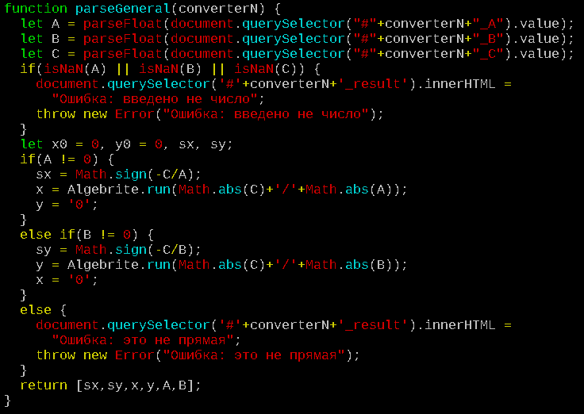
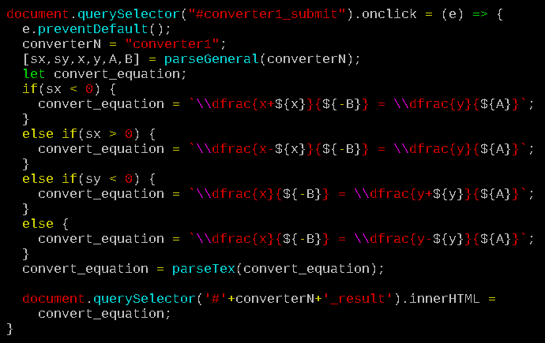
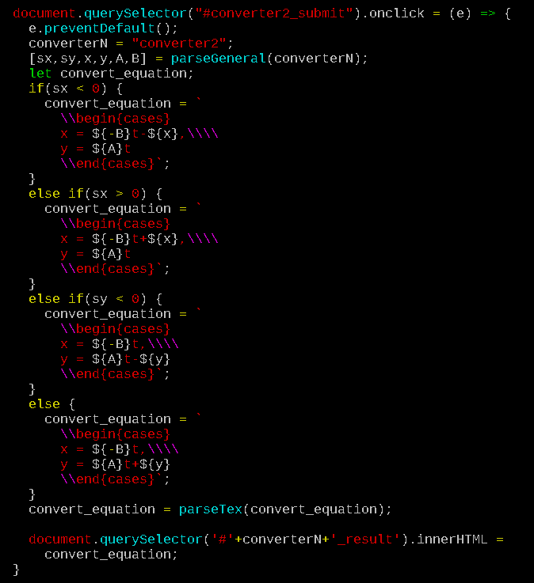
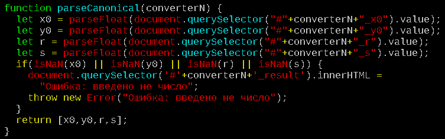
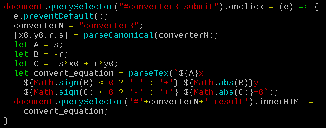
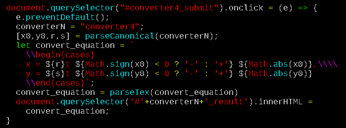

Уравнения прямой на плоскости
Перевод одного уравнения в другое
Конвертер из общего в каноническое
Конвертер из общего в параметрическое
Конвертер из канонического в общее
Конвертер из канонического в параметрическое
Конвертер из параметрического в каноническое
Здесь должен быть конвертер
Конвертер из параметрического в общее
Здесь должен быть конвертер
Генератор уравнения прямой по двум точкам
Здесь должен быть генератор
Исходный код конвертера из общего в каноническое

Исходный код конвертера из общего в каноническое

Исходный код конвертера из общего в параметрическое

Исходный код конвертера из канонического в общее

Исходный код конвертера из канонического в общее

Исходный код конвертера из канонического в параметрическое
